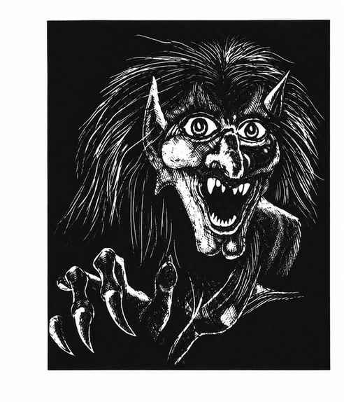

夜女巫 · Night Hag
 |
|
夜女巫一族统治着哈迪斯曲折混乱的位面，极少在别处出现。在自己的领域里它们数量众多，但在物质位面通常单独出现，总是在寻找极端邪恶之人，将其杀死并带回哈迪斯，转化为恶魔与魔鬼都视为珍贵资源的幼虫。
若夜女巫发现一个极端自私邪恶的人，会施展强力睡眠术，即使 12 级人类也会受影响，除非魔法豁免成功；随后她会勒死熟睡的受害者。若睡眠术失败，她会每晚以太化造访，在受害者梦中侵入，使其也进入以太状态，再骑乘其身体直到天亮。受害者无法将她从背上赶下；每晚骑乘永久吸取受害者 1 点体质，体质降至 0 时受害者死亡，夜女巫便带着其幼虫灵魂返回哈迪斯。
夜女巫憎恨善良，只要看起来有成功可能，就会攻击任何善良阵营生物。她每天可使用 3 次魔法飞弹（每枚命中造成 2–16 点伤害）和 3 次衰弱射线；可随意进入以太状态，也能感知生物阵营并随意变形。若陷入困境，她可尝试开启传送门召来 I 型恶魔或倒钩魔鬼（各 50%），传送门开启本身有 50% 的机会成功；她不喜欢这样做，因为随后必须以一个幼虫作为报酬。夜女巫完全免疫睡眠、魅惑、恐惧、火焰和寒冷类法术，只有银质、铁质或 +3 及更好的武器才能伤害她。
夜女巫还能让身体进行星界投射，但必须持有一枚自己在哈迪斯锻造的特殊护符。护符被夺走时，她会被留在当时所在位面；护符能治愈持有者感染的疾病，并使所有豁免检定获得 +2。不过善良生物使用时，护符每次使用会损耗 10%，最终消失。夜女巫外观丑陋，皮肤呈深蓝紫色，长着黑发与发红光的双眼；手脚有利爪，指甲乌黑如煤。